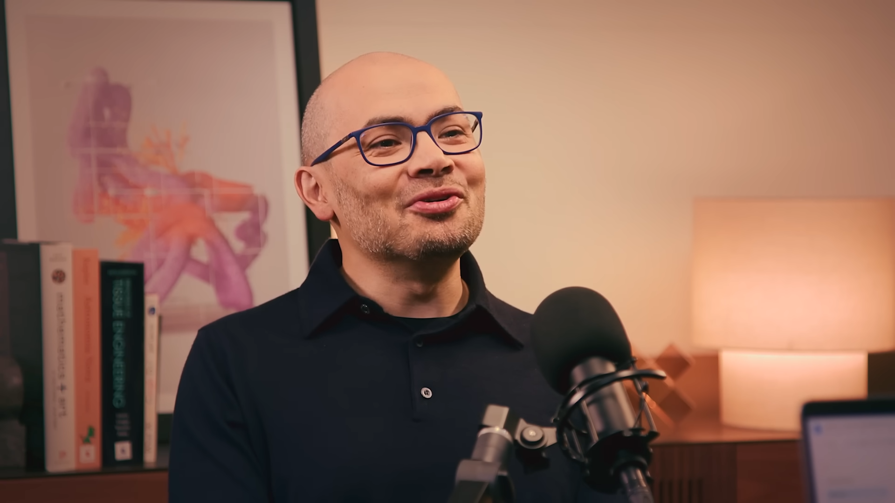

구글 딥마인드 CEO 데미스 하사비스가 AGI에 도달하려면 스케일링 50%와 혁신 50%가 모두 필요하다고 밝혔습니다.
월드 모델(Genie)과 시뮬레이션 에이전트(Simma)의 결합이 로보틱스, 과학 연구, 게임까지 확장되며 차세대 AI 훈련의 핵심 루프로 부상하고 있습니다.
하사비스는 "아직 우주에서 계산 불가능한 것은 발견되지 않았다"며, 튜링 머신의 한계를 시험하는 것이 딥마인드의 본질이라고 선언했습니다.
AGI까지 50%는 스케일링, 50%는 혁신이 필요하다고?
당신 회사의 AI 전략은 100% 벤더 의존 아닙니까?
국제수학올림피아드 금메달을 따는 AI가 고등학교 수학 문제에서 틀립니다. 이 모순을 딥마인드 CEO 본인이 "아직 AGI가 아닌 이유"로 꼽았습니다. 하사비스가 직접 밝힌 AGI까지의 빈 칸이 무엇인지, 경영 리더가 이 간극을 어떻게 읽어야 하는지 정리했습니다.
2025년 AI 산업의 무게 중심이 대형 언어 모델에서 에이전트 AI로 이동했습니다. 구글 딥마인드는 Gemini 3 출시, 핵융합 파트너십(Commonwealth Fusion), 양자 컴퓨팅 오류 정정 협업까지 동시에 진행하고 있습니다. 하사비스는 이 팟캐스트에서 "현재 리소스의 50%를 스케일링에, 50%를 혁신에 배분한다"며 AGI 도달 전략을 처음으로 구체적 비율로 공개했습니다. AI 투자 버블 논란이 거센 시점에, 딥마인드가 어디에 베팅하는지 직접 들을 수 있는 1차 소스입니다.
첫째, AGI의 누락된 조각이 구체화됐습니다. 하사비스는 현재 AI에 3가지가 빠져 있다고 진단합니다. (1) 수학의 AlphaGo, 즉 검증 가능한 추론 시스템이 아직 미완성입니다. (2) 지속적 온라인 학습(continual learning)이 없습니다. 현재 모델은 훈련 후 세상에 나가면 더 이상 배우지 못합니다. (3) 환각 제어와 신뢰도 점수가 부재합니다. AlphaFold처럼 "이 답에 대한 확신이 몇 퍼센트인지" 제시하는 기능이 필요합니다.
둘째, 월드 모델이 차세대 AI의 핵심 인프라로 부상합니다. 딥마인드의 Genie(월드 생성)와 Simma(시뮬레이션 에이전트)가 결합되면, AI가 AI를 위한 훈련 환경을 무한히 생성합니다. Genie가 세계를 만들고, Simma 에이전트가 그 안에서 탐색합니다. 하사비스는 이를 "무한한 훈련 루프의 시작"이라고 표현했습니다. 로보틱스, 게임, 과학 시뮬레이션 모두 이 구조 위에 올라갑니다.
셋째, AI 버블은 부분적으로만 존재합니다. 하사비스는 "아직 제품도 없는 스타트업이 수백억 달러 밸류에이션을 받는 것은 지속 가능하지 않다"고 인정했습니다. 그러나 빅테크 밸류에이션 뒤에는 실제 비즈니스가 있다고 구분합니다. 과거 딥마인드 창업 시 "AI가 뭔데?"라는 반응에서, 지금은 "AI만 이야기한다"로 바뀐 것은 과소평가에 대한 과잉 반응이라는 것이 그의 분석입니다.
넷째, 아첨형 AI를 경계해야 합니다. 하사비스는 "사용자 참여를 극대화하는 방향으로 AI를 설계하면 소셜 미디어의 실수를 반복한다"고 경고합니다. Gemini 3의 페르소나는 따뜻하되 과학적 방법론에 기반하도록 설계했으며, 사실과 다른 주장에는 "친절하게 반박"하는 것을 기본으로 삼았습니다. 이는 기업이 AI 챗봇을 도입할 때 페르소나 설계의 기준이 됩니다.
AI를 '챗봇'으로만 보는 조직은 월드 모델 전환에서 뒤처집니다. 하사비스에 따르면, 월드 모델은 로보틱스, 과학 시뮬레이션, 게임 NPC까지 확장됩니다. Gartner는 2027년까지 기업의 40%가 시뮬레이션 기반 AI 훈련을 도입할 것으로 전망합니다. 텍스트 기반 AI만 운영하는 조직은 이 전환기에 2~3년의 격차가 발생할 수 있습니다.
AI 페르소나 설계 없이 챗봇을 배포하면 브랜드 리스크가 됩니다. 아첨형 AI가 사용자를 자기 확증 편향(echo chamber)으로 몰아가는 사례가 이미 보고되고 있습니다. 기업 고객 응대 AI에서 이 문제가 발생하면, 고객 신뢰도 하락과 규제 리스크로 직결됩니다.
하사비스의 50:50 원칙을 자사에 대입합니다. 기존 AI 도구 활용(스케일링)에만 치우쳐 있는지, 새로운 활용법 탐색(혁신)에도 투자하고 있는지 팀장 미팅에서 논의합니다. (30분)
현재 사용 중인 AI 챗봇이나 자동화 도구가 "이 답변의 확신 수준"을 제공하는지 점검합니다. 없다면, 중요도 높은 의사결정에 AI를 쓸 때 수동 교차 검증 프로세스를 도입합니다. (1시간)
고객 대면 AI가 있다면, "어디까지 동의하고 어디서 반박할 것인가"의 기준을 문서화합니다. 딥마인드의 접근법(따뜻하되 과학적, 사실 오류에는 친절한 반박)을 참고합니다. (2시간)
Genie, Simma, VO 등 구글 딥마인드의 월드 모델 프로젝트를 팔로우합니다. 자사 산업에서 시뮬레이션 기반 AI 훈련이 적용 가능한 영역을 1개 이상 식별합니다. (팀 리서치, 1주)
월드 모델의 물리 시뮬레이션은 아직 근사치 수준입니다. 하사비스 본인이 인정했습니다. VO와 Genie의 물리 엔진은 "육안으로는 사실적이지만, 물리 실험 수준의 정확도에는 미달"합니다. 로보틱스나 안전 관련 영역에서 월드 모델을 활용하려면 검증 단계가 필수입니다.
50:50 전략은 딥마인드 규모에서의 이야기입니다. 연구 인력 수천 명, TPU 인프라, 구글의 자본을 가진 조직의 리소스 배분 비율입니다. 중소기업이 같은 비율을 적용하기는 어렵습니다. 자사 규모에 맞는 혁신 투자 비율을 별도로 산정해야 합니다.
이 팟캐스트는 딥마인드 CEO의 자사 관점입니다. Gemini 3, Genie, Simma 등 자사 기술을 중심으로 서술됩니다. OpenAI의 o1 시리즈, Anthropic의 Claude, Meta의 Llama 등 경쟁 접근법과 교차 비교해야 균형 잡힌 시각을 유지할 수 있습니다.
AGI까지의 거리는 스케일링만으로 좁혀지지 않습니다. 월드 모델, 지속 학습, 신뢰도 점수라는 빈 칸을 인식하는 리더만이 다음 전환점을 준비할 수 있습니다.
- Hassabis, D. & Fry, H. (2025, December 17). "The future of intelligence." Google DeepMind: The Podcast. https://www.youtube.com/watch?v=PqVbypvxDto